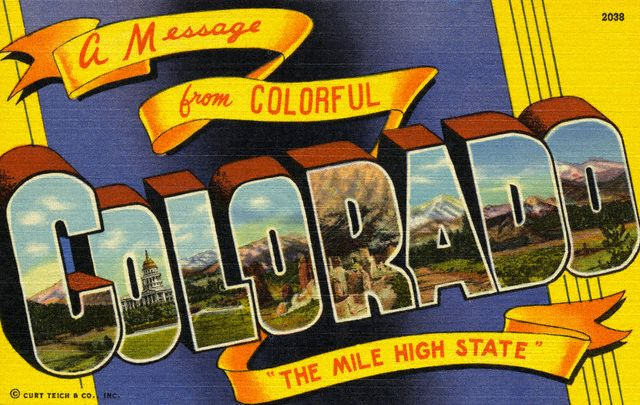

Nov. 7th & 8th, 2003 -- Denver, Colorado
Our sojourn with Chrissie was
perfect. Dropping in on her life in that extraordinary part of the
world for a couple of days left us wanting more of both. We left
feeling rested
and pampered and we were missing her before we made our first turn onto
a paved road. After studying NOAA's
web site, (our newest best
friend--thanks, Shel!) we flirted with heading down through New Mexico
to avoid mountain snow, but on further examination realized we would
beat a
storm if we got an early start and stayed the course. That meant
skipping Vail and pushing on to Denver. No big disappointment--it was
a pretty arbitrary stop, chosen for its location--four hours from
Chrissie's. From the road, Vail appeared as a sea of condomiserables
and quickly receded in the rear view mirror.
Leaving Castle Valley, nature's eye-popping show continued: lots more
red rock along Route 128 that eventually gave way to bigger roads, high
plains, and finally the Rockies' twists and turns. At I-70's 10,000
foot summit, we found
<snow>, both falling and sticking, much to Rufus' delight. (It's
a toy
and a beverage!) Forgetting
what 10,000 feet does to a body, Eric and I skipped our way up a
two-flight stairway, got to the top and just about passed out. Eric
said he had to keep thinking, "Breathe. OK. Now, breathe more." I was
grateful for Patti (as I often am) and all that time spent in the gym:
I know
a heart beating like a triphammer doesn't equal instant death.
After being in the wonderland that is Castle Valley, Denver rose out of
its exurbs as
quite the eyesore. It would be easy to dismiss it as LA with
smog-obscured mountains and bad weather. But I know from experience
that it's all relative: it rises like an oasis out of the plains when
driving from Kansas's doppelganger, Nebraska. We
pulled up to the venerable Brown
Palace, Denver's oldest hotel,
where we
were warmly greeted and Rufus sucked up the fussing to which he is now
accustomed. As we walked from our car, a very elderly guest was
working his way to his, calling loudly to his companion, "Do you
have a quarter for the bellman?" I hope the bellman drew the balance
due him from considering that this gent remembered visiting
grand hotels when this was a
generous tip.
It was the first night in six that we weren't visiting with
family, and it marked our one-week anniversary on the road. We were
both more than averagely tired and opted for a stroll around the nearby
16th Street pedestrian mall with Rufus, who took an instant dislike to
downtown Denver. Salt Lake was fine. But here, he kept stopping in his
tracks, anxious to return to the great indoors. It had absolutely
nothing to do with this spiffy setup,
provided by the
hotel. He deigned to drink from the water dish adorned with giant paw
prints, but
wouldn't go near the fancy-schmancy wrought iron dog bed. (Why sleep on
a little one when you can sleep under a big one?) We followed his lead,
stretched out on the mattress above, and conked out.
Saturday morning, after bizarre dreams of Neil and Rose buying a house
in the heart of downtown Seattle (their new dreamscape digs were large
and filled
with rampaging kittens) I awoke to a latte and a NY Times, which Eric
had thoughtfully ventured out to find. Thus fortified, all travelers
drove out to Boulder, a livable looking
university town where Eric & Peter spent the summer of 1967.
Their dad, Don, was attending a couple of math symposia. We spotted the
turn-of-the century brick building where the brothers were enrolled in
a kids' summer program. Eric has happy memories of being cut loose from
that to spend his time more productively, roaming the campus with other
kids and playing cards. Getting a taste of dorm life at an early age
left him feeling quite the sophisticate.
The university district was heating up for a big football game. Things
were quieter down on the Pearl
Street Mall, a pedestrian
shopping district specializing in consumer hip. Organic restaurants
with ironic names butted shoulders with natural fiber clothing stores
and galleries. One showed work from a painter I'd browsed online, Amy
Cheng. (The answer to the question: should I buy her work?
"Yes.")
Missoula may have a place or two for buying Tibetan prayer flags, but
Boulder offered up many. And it held its own on the lovely old
theater front. But the homeless scene was bigger and thrived down
on
the mall. Years of living in San Francisco and walking the
heartbreaking gauntlet of street folk living outside my office near
city hall
toughened me to opening my wallet to most panhandlers. Sometimes,
though,
there's just no choice. Such was the case with the severely obese woman
in a wheelchair, hooked up to an oxygen tank, singing old English
ballads of
life's cruelties in a voice so perfect and clear it sent a shiver up
the back of your neck. A block later, I overheard this tidbit while
walking by a group of scruffy looking guys: "Hey, we're alcoholics. We
need to drink every hour." We strolled with Rufus along block after
block, even dropping in on Science
Artworks where the owner
greeted Ru warmly and encouraged him to play with his Aussie. Just
steps down the street another shop keeper let us know that we could be
fined for walking Ru on the mall. We had failed to notice these
signs, which were posted at every street crossing.
Herbal refreshment of the legal kind was on our minds, so we pushed on
to the edges of Boulder
to take a gander at the town's biggest business: Celestial Seasonings.
A broad field overrun with winning little prairie
dogs
twitching
equally
winning
little tails separates a new housing development from the
home of the tea giant, where tastings and tours are offered daily. As
it was
Saturday, we were given tickets to a "quiet
tour," meaning none
of the plant's machines were running and we didn't have to
wear hair nets. Suppressing our disappointment about the
headgear, we gathered with a surprisingly large group of the tea
curious, clutching our tour entry tickets: laminated Celestial
Seasonings box lids. We passed the wait in the art gallery, taking in the complete works
from which the box art came, sipping free samples of
Blueberry Zinger from cups the size the dentist hands you
when it's time to rinse.
Jeanette, a perky 20-something tour guide told us to get comfortable:
she had a short video to show us. As anyone who has seen the Blanck
Family Film Festival knows, I love corporate films. They're almost
always enthrallingly dumb. And like fine wine, they improve with age.
As
new as this one was it didn't fail to disappoint. The story started
with the happy tale of company founder Mo Siegel and his friends
gathering
wild herbs in the hills above Boulder, circa 1970. This was illustrated
with charming black-and-white photographs of the soon-to-be
tea mogul and his ragtag band of business pals. In no time flat they
REVOLUTIONIZED THE TEA INDUSTRY IN THE UNITED STATES! World domination
was only a heartbeat away, as they became part of the giant Hain
conglomerate. All this was screened under a sign reading, "The true
measure of success isn't money, fame, or power. It's laugh lines." --
Celestial Seasonings"
Now--I'm the last one who's going to fault someone for
riding the wave of a rising business. But it's tough to sell the happy
little family thing when, in fact, you're a big, honking corporation. I
don't imagine there are a lot of laugh lines created if the quarterly
numbers are down. As I
watched the logos of almost every natural food product with decent
packaging fly across the screen, I couldn't help think, "We are
Beatrice." That said, our friends at Celestial Seasonings make
perfectly fine tea. And soy milk. And soups. And organic frozen
dinners, and...well, you get the idea.
Letters from satisfied customers added poignant and comic
notes to the video: the Peace Corps worker in Zambia whose emotional
connection to tea and home is so strong, she's brought to tears by the
box of Celestial Seasonings tea her mom includes in each care package;
the mountain-dwelling customer who finds his truck's window broken by a
bear who punched through the glass to get his paws on the fruity tea
bags left in the
vehicle. Being that we were about to witness a "quiet tour," sans
machines running, the next part of the video was fun: it walked you
through bales of herbs being cleaned, cut, tumbled, and processed to be
splurted out onto teabag paper and stamped, ravioli-like, into tea
bags.
If you were about to walk through a running plant, it might have had
that Dukes of Hazzard voice-over quality that explained things before
you saw them, just in case you weren't quite sharp enough to understand
what you were seeing.
The video drew to a close and Jeanette addressed the group, "Is there
any questions?"
I flinched. But hey--she was just a kid. Anyone can misspeak.
She led us through a warren of corporate offices, past mazes of
cubicles and conference rooms named for--you guessed it--teas: Red
Zinger made the cut. However appropriate it might have been, we didn't
see a Sleepytime. Jeanette warned us to be careful walking on the
plant's floor, as tea dust made it a little slippery. We were also to
remain inside the yellow lines painted on the floor to keep us from
rubbing
against items covered in said dust and staining our clothes.
The tour began outside the plant's herb cleaning area. Each day,
Jeanette explained, several
herbs are processed here, in separate batches. Most
recently, they were cleaning Hibiscus flowers to separate out stems,
and heavier items like rocks and coins. (Coins?) A stainless steel bowl
containing sample dried Hibiscus flowers was passed among our group.
Jeanette encouraged us to sniff and feel the flowers, but not to eat
them. (Who goes on these tours, anyway?) As best as we could tell, the
flowers had no discernible scent. I had no impulse to eat them.
"Can everyone smell the flower scent?" she asked.
The group stood there blinking. There was a communal sense of having
flunked our first Celestial challenge.
"It's a little hard to smell much with all the other scents in here," I
offered, feeling a little sorry for Jeanette, who now looked worried
about us.
And it was true. Walking into the plant smells a lot like sticking your
nose into a freshly opened box of herbal tea--multiplied by 100.
"Is there any questions?" Jeanette asked.
Oh, dear.
On we went, past pallets stacked two stories high, each filled with
giant bags of herbs. They were labeled, but your nose could tell what
you were passing about as well as your eyes. We walked through waves
of scent. Just like its sister flowers in the stainless bowl, Hibiscus
didn't offer much. But lemon grass was distinctive and pungent, and
gave way to a rich clove scent.
"Who likes caffeine?" Jeanette asked brightly.
Hands rose, though many went up tentatively, as if to admit such a
thing in the heart of herbal mecca was heresy.
"Then you'll like the next room," she said, punching a button that
opened a gigantic metal garage door, elaborately adorned with Celestial
art celebrating black tea. We stepped inside, minding the yellow lines.
Once again, pallets rose to the rafters filled with huge sacks of
different varieties of caffeinated teas. A heady black tea smell
walloped our noses. Black tea, we learned, was simply green tea that
was allowed to dry and ferment. (Picture an apple cut in slices, left
out for a few days.) Green tea was younger and contained less caffeine.
And white tea, made from tea flower petals rather than leaves, offered
the
least in the way of buzz. I also had the most delicate flavor and
packed the
greatest antioxidant punch. We all stepped out and the corrugated metal
door lowered.
"We have to keep the tea separate from the herbs as tea easily absorbs
the herbs' oils and it affects its flavor," Jeanette explained.
"Is there any other questions?" Jeanette queried.
Right.
We moved on to the most famous part of the tour: the mint room. We
paused outside another two-story garage door, this one sporting lovely
mint leaf art.
"Who's excited?" Jeannette asked, her own quite
evident.
Perhaps better groups break into hoots and handsprings at this
juncture. Not ours. No one yelled, "Me! Me! I'm excited!" A few in our group
did smile politely, though.
"I have to tell you before I open this door," she continued. "This is
an intense experience. The aroma of the mint is so strong that some
people get very emotional. It may make your eyes water. And it will
definitely clear your sinuses. Does anyone have a cold?"
Once again, our group disappointed. All were apparently in disgustingly
good health.
"Well," Jeanette said, "if anyone did, they'd find their nose would
open right up."
"Are you ready?" she asked, waiting a few seconds before hitting the
red button to open the door. You had to hand it to her, she knew how to
make the most of the moment.
Then the metal door slowly clattered up and even as it was rising the
scent of mint
was pretty overwhelming. Stepping inside, we quickly felt every
millimeter of our sinus' lining, right back to the base of our skulls.
It was a lot like a wasabi rush, but a lot more pleasant. Still, our
eyes welled with tears. Some people didn't venture in. Others stepped
out of the room after 20 or 30 seconds. Some of us, myself included,
nipped in and out, staying until our eyes actually hurt, stepping out
to let them calm down a bit, and then returning for more. Eric--ever
macho--was one of the last to leave the mint den, snuffling and
tearing, but all smiles.
"That was great," he said, removing his glasses and wiping his eyes
with the edge of his sleeve.
"You can come back every day, through eternity," Jeanette said. I'm not
kidding. Clearly, she has a faith in the company that extends well
beyond that an average good employee, and a faith in an afterlife that
includes the mint room. That must be very comforting.
After the big minty buzz, all else was anticlimax. We stood in front of
silent bagging machines as Jeanette explained the bagging process.
Unless you'd slept through the video--which, of course, you might well
have--you already knew the drill. The tour came to an end with one
last, inevitable query.
"Is there any questions?" Jeanette smiled.
Nope.
"Then have a Celestial day!" she enthused.
We politely filed past the barrel of free sample teas (Cranberry Apple
Zinger--take one sample pack,
please) and into a gift shop, overflowing
with tons 'o tea and tea related junk. We beat a hasty retreat, all
tea'd off.
It was well past lunch time, so we trundled off to the Hotel
Boulderado for a tasty spinach salad. Driving back to Denver, I was
compelled to make a stop off the standard tourist loop. In an
industrial district, on the edge of town, there's a graveyard of sorts.
We stopped in at T.D. Rowe/ACE Vending Company to pay homage to the
plastic ponies that used to sit
outside supermarkets, those poor slutty little things that gave anyone
a ride
for a quarter. As a kid, I begged to saddle up, but my mom gave a
better-than-average reason for refusing.
"They're owned by the mob," she'd say.
They probably were, but at five, I didn't fully understand the whole
mob concept. She
explained the mob hurt people and we didn't want to give money to
people who hurt people.
Fair enough.
Still, the things have always held a fascination for me. So when
researching our trip and finding that there was a place where a bunch
had been discarded, I wanted to pay my respects. Or at least take a few
odd photos. It was a humble, casual memorial, surrounded by chain link
and discarded drink vending machines. But there they sat:
hydrocephalic bird things, ponies, cows,
dragons. Most were from the '70s and
'80s, so not quite the
vintage I knew and loved. But the decay was somehow pleasing, just the
same.
The couple who ran the joint came out to chat us up. They were very
kind, and said their business refurbished them and put them outside
businesses with whom they split the profits, 50/50. I didn't ask if
they were
members of the mob, or if they hurt people. There was nothing about
them that suggested that. I was quite taken with the broken down '60's
pony. The woman in the couple told me that I was a few days too
late: she had just sold a giant plastic cow to a woman for her
yard--and at
a bargain price. As nice as I think a plastic cow would look in our
yard, I took the news well. Though I did allow the image of such a cow,
strapped to the roof of the Lexus, to flit though my imagination. It
would
have cut quite the picture, rolling down the highway.
Tomorrow: We're off to Kansas City, Kansas City here we come.
Stats
Hours driven: 1
Number of "no dogs" signs passed without notice: 6, give or take
Best bumper sticker: "Friends don't let friends drink Starbucks."